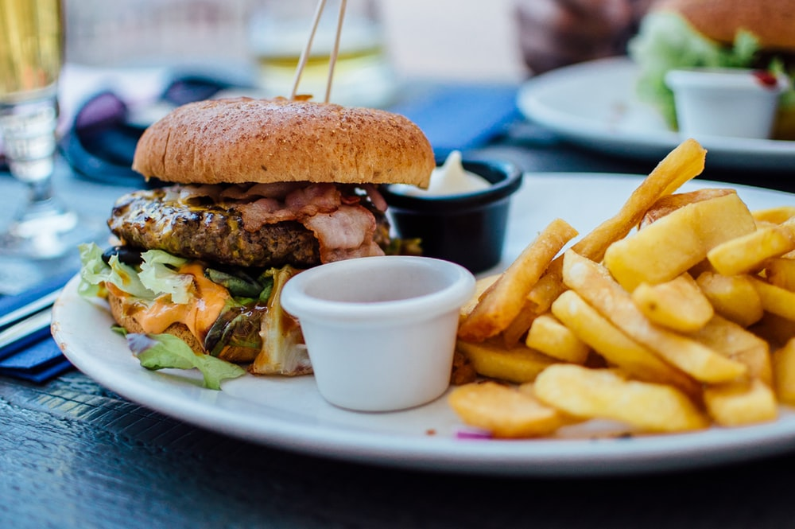

|  |
A community cafe serving
home cooked , locally
sourced , organic food
|
| With stunning views of the ocean.Example Cafe |
| offers the perfect environment to unwind and |
| recharge the bellies. |
|
|
|
| Our menu offers a wide range of breakfast, |
| brunches and lunchies including a range of |
| vegetarian options. |
|
|
|
| Whether you are on a fresh hot coffee or a cooling |
| smoothie,you never need to feel rush relax with |
|
This weekend's special
brunch |
This weekend our season of special brunches continues with scrambled egg
on an English muffin.Not for the faint-hearted,the secret to these eggs
is that they are made with half cream and cooked in butter with no more than four eggs
at a time.